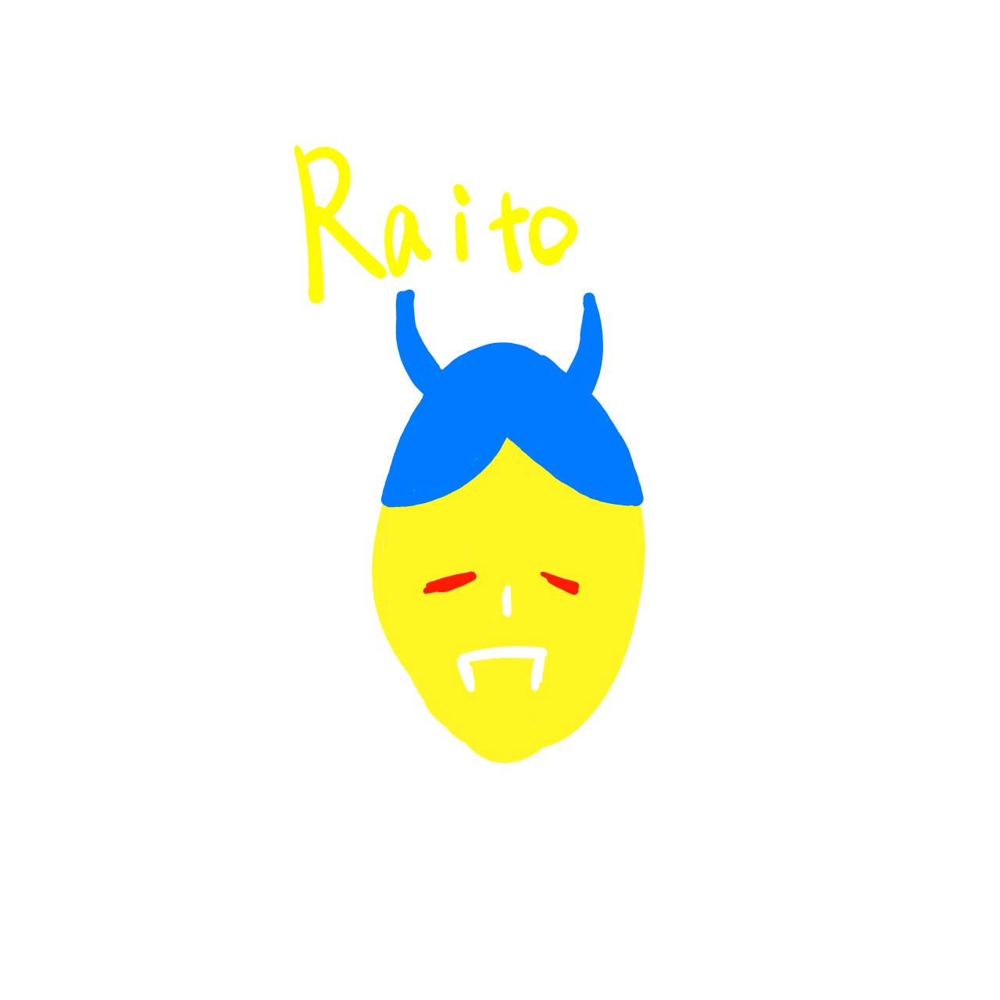

MEMBER
ライバー一覧
Project Parade! のメンバーをご紹介します。
TxR
Project Parade!代表のTxRメンバー

Project Parade! 0期生
Project Parade! 0期生のライバー
※画像・動画について
現在は制作確認用のダミー表示です。正式公開時に、使用許可を得た画像・動画へ差し替えます。
MEMBER
Project Parade! のメンバーをご紹介します。
Project Parade!代表のTxRメンバー
Project Parade! 0期生のライバー
※画像・動画について
現在は制作確認用のダミー表示です。正式公開時に、使用許可を得た画像・動画へ差し替えます。